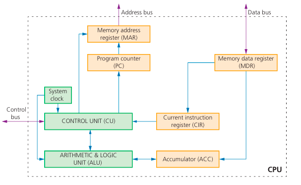
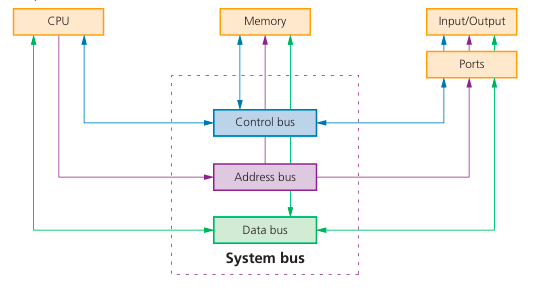

The Von Neumann model describes a system where data and programs are stored in the same memory. This is the foundation of almost all modern computers.

Key Components:
- ALU (Arithmetic Logic Unit): Performs calculations and logical decisions.
- CU (Control Unit): Manages the flow of data and instructions.
- Registers: High-speed storage locations within the CPU.

The Three System Buses:
Address Bus: Unidirectional. Carries signals relating to addresses between the processor and memory.
Data Bus: Bi-directional. Sends data between the processor, memory, and I/O devices.
Control Bus: Bi-directional. Carries signals from the CU to control activities.